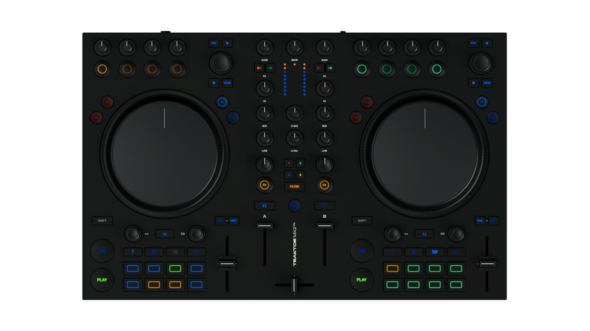
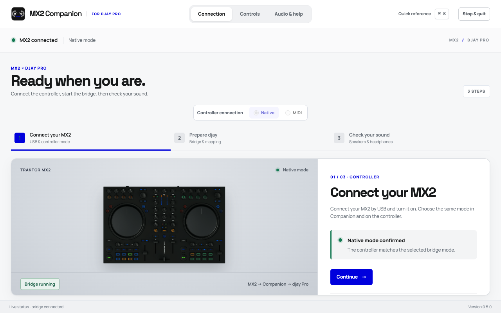
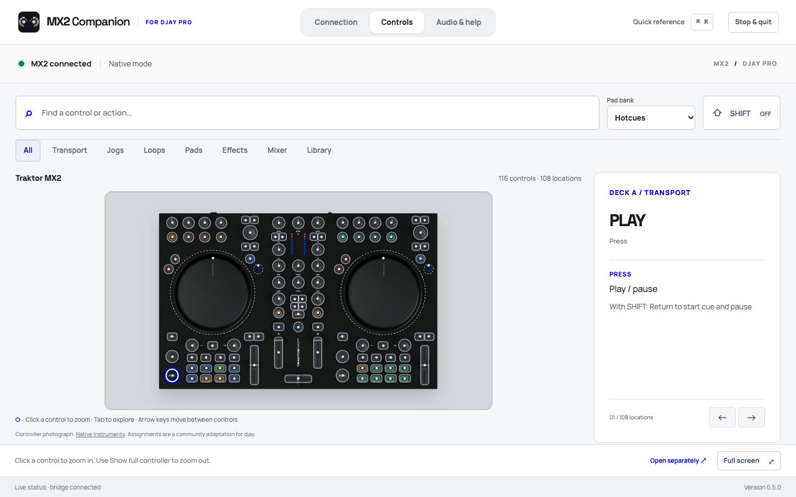
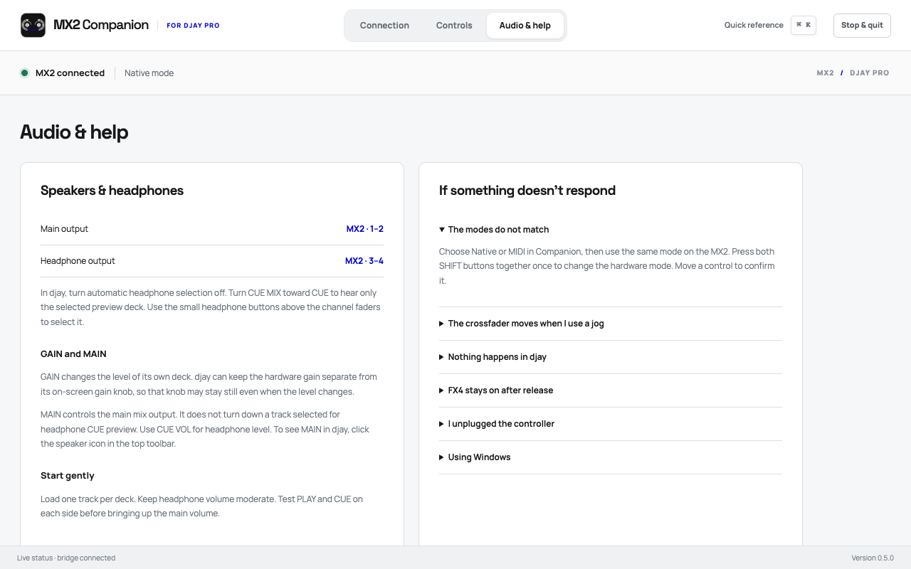

With Companion
- Open the DMG and drag MX2 Companion into Applications.
- Connect the MX2, choose Native or MIDI in Companion, then start the connection.
- Import the matching mapping in djay and select the virtual MX2 for djay device.
Play, browse, cue and mix with the controller you already know.

Use the Mac app, or run the original MIDI bridge from Terminal.
Built around the actual controls.
Native and MIDI modes in one app. A searchable reference for 116 controls.
Companion offers a guided window. Classic MIDI uses the original Terminal bridge. Neither download is a standalone djay mapping.
Companion translates the MX2’s controls for djay, manages deck and pad modes, and provides native RGB feedback. Choose Native or MIDI in the app, then use the matching mode on the controller.
Mapping actions with Companion
The connection check, control reference and audio guide stay at hand while you mix.



Choose the path that matches your setup. The first run takes only a few steps.
The working setup before the app. Requires the Terminal bridge.
The mapping file alone is not a complete direct MX2 mapping. The included bridge drives its SHIFT layers, pad modes and feedback. Disable djay’s physical Traktor MX2 MIDI input to avoid duplicate commands.
Download Classic MIDIYes. Select MIDI in Companion and on the MX2, then use the Visual Complete mapping with the virtual MX2 for djay device in djay.
Not in this release. Visual Complete requires Companion or the included MIDI bridge. Importing that file directly for the physical Traktor MX2 will not provide its SHIFT layers, four pad banks or feedback.
Set the MX2 main output to channels 1–2 and headphones to 3–4 in djay. For a single-deck preview, select the deck’s headphone cue and turn CUE MIX toward CUE.
This build is not notarized by Apple. If macOS blocks the first launch, open System Settings → Privacy & Security and choose Open Anyway after trying to open the app. See Apple’s instructions.
The downloadable app is built for Apple silicon Macs. Windows and Intel Mac packages have not been validated on controller hardware.